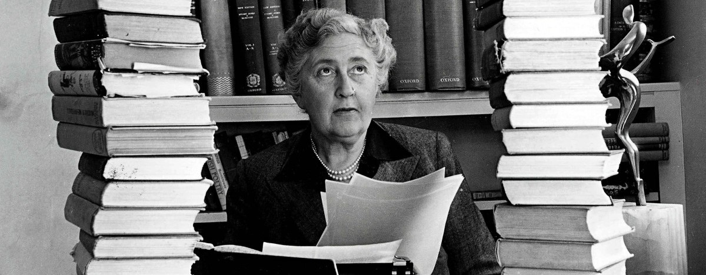
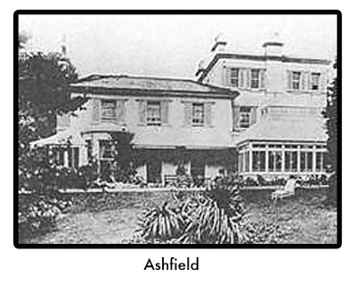
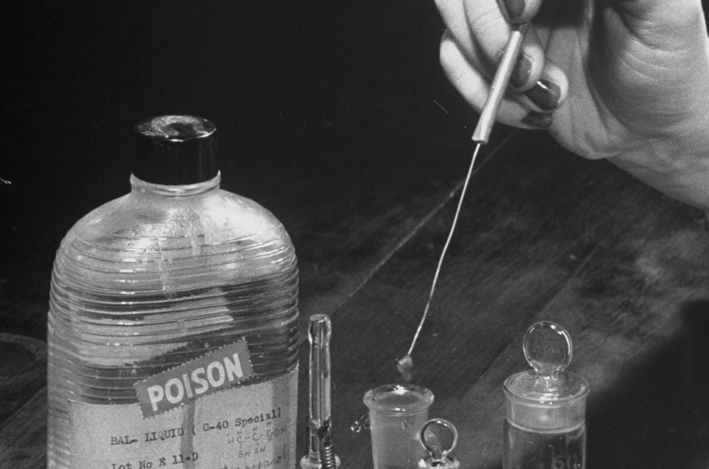
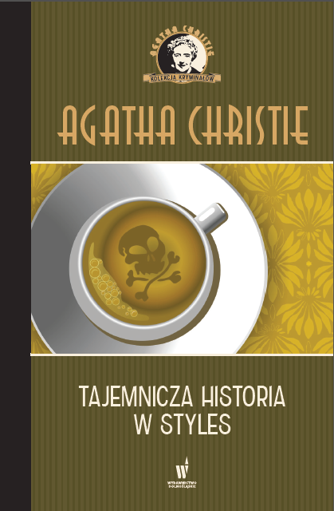

Twórczość Agathy Christie
Witam na stronie poświęconej twórczości autorki ponad 80 kryminałów, Agathy Christie. Znajdziecie tu treści szczególnie interesujące dla fanów powieści detektywistycznych, jak na przykład moje Top10 ulubionych książek Christie wraz z opisami i moim krótkim recenzjami, ale również kilka faktów z życia autorki.
Krótki życiorys
Urodziła się jako Agatha Mary Clarissa Miller 15 września 1890 roku w Torquay w hrabstwie Devon. Miała dwójkę starszego rodzeństwa, siostrę Margaret i brata Louisa. Nauczana była w domu. Gdy miała 11 lat zmarł jej ojciec.
W 1912 roku poznała swojego pierwszego męża, Archibalda Christie, za którego wyszła za mąż w 1914 roku. Mieli jedną córkę Rosalind. Para rozwiodła się w 1928. Drugi raz za mąż wyszła w 1930 roku za Maxa Mallowan.
W czasie I wojny światowej pracowała w szpitalu jako technik farmaceutyczny, co bezpośrednio przyczyniło się do jej dobrej znajomości trucizn, którą wykorzystywała później w swoich powieściach.
Jako pisarka zadebiutowała w 1920 roku powieścią „Tajemnicza historia w Styles”. W swojej trwającej ponad 50 lat karierze wydała ich ponad 80. Ostatnią książkę „Kurtyna” opublikowała w 1975. Zmarła z przyczyn naturalnych 12 stycznia 1976 roku.
